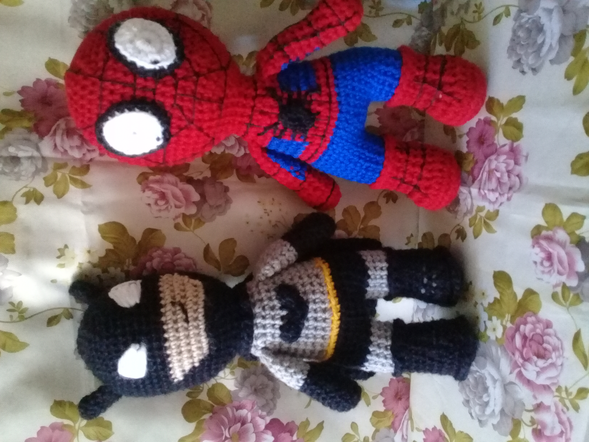

Claudia Lorenzo

Domicilio
Contacto
Domicilio
Contacto
Soy estudiante de la Licenciatura en Turismo en la Universidad Nacional de Avellaneda. Con capacidad de aprender y aplicar mis concocimientos en el ámbito profesional. En busca de una oportunidad laboral en la que pueda desarrolar mis habilidades y adquirir nuevas experiencias.
Masoterapeuta
Profesora de Folklore
Como hobby realizo amigurumis, que es una técnica japonesa de tejido
